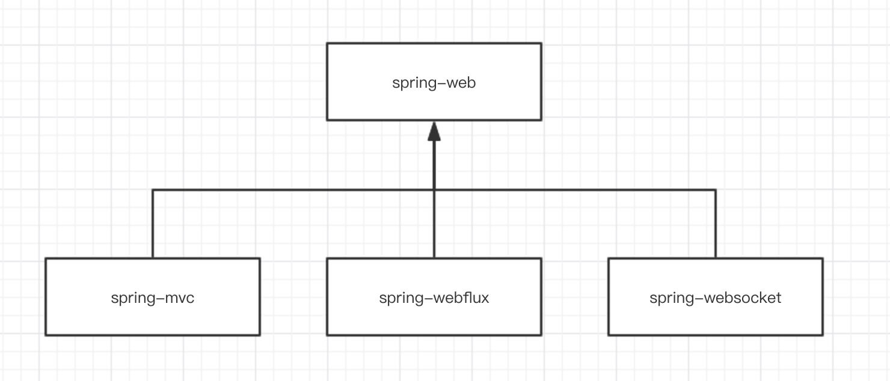
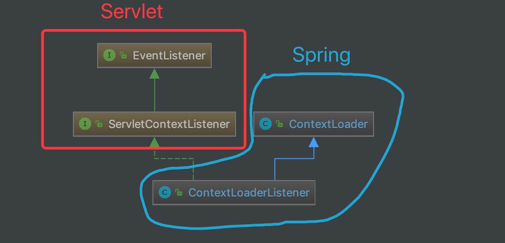
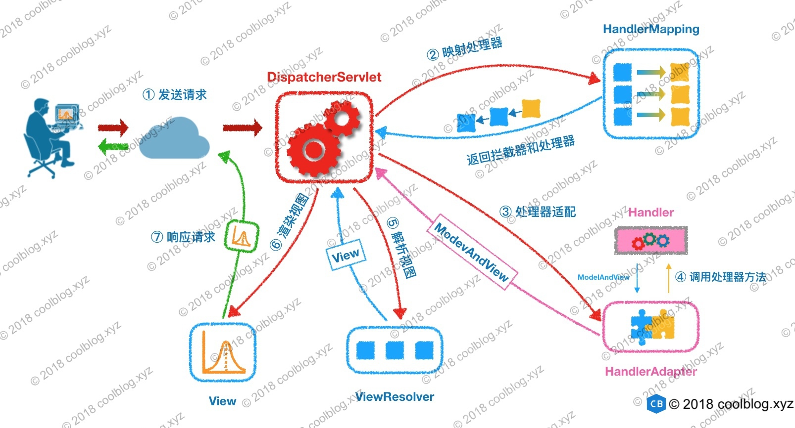

- AQS 万字图文全面解析.md.html
- Docker 镜像构建原理及源码分析.md.html
- ElasticSearch 小白从入门到精通.md.html
- JVM CPU Profiler技术原理及源码深度解析.md.html
- JVM 垃圾收集器.md.html
- JVM 面试的 30 个知识点.md.html
- Java IO 体系、线程模型大总结.md.html
- Java NIO浅析.md.html
- Java 面试题集锦（网络篇）.md.html
- Java-直接内存 DirectMemory 详解.md.html
- Java中9种常见的CMS GC问题分析与解决（上）.md.html
- Java中9种常见的CMS GC问题分析与解决（下）.md.html
- Java中的SPI.md.html
- Java中的ThreadLocal.md.html
- Java线程池实现原理及其在美团业务中的实践.md.html
- Java魔法类：Unsafe应用解析.md.html
- Kafka 源码阅读笔记.md.html
- Kafka、ActiveMQ、RabbitMQ、RocketMQ 区别以及高可用原理.md.html
- MySQL · 引擎特性 · InnoDB Buffer Pool.md.html
- MySQL · 引擎特性 · InnoDB IO子系统.md.html
- MySQL · 引擎特性 · InnoDB 事务系统.md.html
- MySQL · 引擎特性 · InnoDB 同步机制.md.html
- MySQL · 引擎特性 · InnoDB 数据页解析.md.html
- MySQL · 引擎特性 · InnoDB崩溃恢复.md.html
- MySQL · 引擎特性 · 临时表那些事儿.md.html
- MySQL 主从复制 半同步复制.md.html
- MySQL 主从复制 基于GTID复制.md.html
- MySQL 主从复制.md.html
- MySQL 事务日志(redo log和undo log).md.html
- MySQL 亿级别数据迁移实战代码分享.md.html
- MySQL 从一条数据说起-InnoDB行存储数据结构.md.html
- MySQL 地基基础：事务和锁的面纱.md.html
- MySQL 地基基础：数据字典.md.html
- MySQL 地基基础：数据库字符集.md.html
- MySQL 性能优化：碎片整理.md.html
- MySQL 故障诊断：一个 ALTER TALBE 执行了很久，你慌不慌？.md.html
- MySQL 故障诊断：如何在日志中轻松定位大事务.md.html
- MySQL 故障诊断：教你快速定位加锁的 SQL.md.html
- MySQL 日志详解.md.html
- MySQL 的半同步是什么？.md.html
- MySQL中的事务和MVCC.md.html
- MySQL事务_事务隔离级别详解.md.html
- MySQL优化：优化 select count().md.html
- MySQL共享锁、排他锁、悲观锁、乐观锁.md.html
- MySQL的MVCC（多版本并发控制）.md.html
- QingStor 对象存储架构设计及最佳实践.md.html
- RocketMQ 面试题集锦.md.html
- SnowFlake 雪花算法生成分布式 ID.md.html
- Spring Boot 2.x 结合 k8s 实现分布式微服务架构.md.html
- Spring Boot 教程：如何开发一个 starter.md.html
- Spring MVC 原理.md.html
- Spring MyBatis和Spring整合的奥秘.md.html
- Spring 帮助你更好的理解Spring循环依赖.md.html
- Spring 循环依赖及解决方式.md.html
- Spring中眼花缭乱的BeanDefinition.md.html
- Vert.x 基础入门.md.html
- eBay 的 Elasticsearch 性能调优实践.md.html
- 不可不说的Java“锁”事.md.html
- 互联网并发限流实战.md.html
- 从ReentrantLock的实现看AQS的原理及应用.md.html
- 从SpringCloud开始，聊微服务架构.md.html
- 全面了解 JDK 线程池实现原理.md.html
- 分布式一致性理论与算法.md.html
- 分布式一致性算法 Raft.md.html
- 分布式唯一 ID 解析.md.html
- 分布式链路追踪：集群管理设计.md.html
- 动态代理种类及原理，你知道多少？.md.html
- 响应式架构与 RxJava 在有赞零售的实践.md.html
- 大数据算法——布隆过滤器.md.html
- 如何优雅地记录操作日志？.md.html
- 如何设计一个亿级消息量的 IM 系统.md.html
- 异步网络模型.md.html
- 当我们在讨论CQRS时，我们在讨论些神马？.md.html
- 彻底理解 MySQL 的索引机制.md.html
- 最全的 116 道 Redis 面试题解答.md.html
- 有赞权限系统(SAM).md.html
- 有赞零售中台建设方法的探索与实践.md.html
- 服务注册与发现原理剖析（Eureka、Zookeeper、Nacos）.md.html
- 深入浅出Cache.md.html
- 深入理解 MySQL 底层实现.md.html
- 漫画讲解 git rebase VS git merge.md.html
- 生成浏览器唯一稳定 ID 的探索.md.html
- 缓存 如何保证缓存与数据库的双写一致性？.md.html
- 网易严选怎么做全链路监控的？.md.html
- 美团万亿级 KV 存储架构与实践.md.html
- 美团点评Kubernetes集群管理实践.md.html
- 美团百亿规模API网关服务Shepherd的设计与实现.md.html
- 解读《阿里巴巴 Java 开发手册》背后的思考.md.html
- 认识 MySQL 和 Redis 的数据一致性问题.md.html
- 进阶：Dockerfile 高阶使用指南及镜像优化.md.html
- 铁总在用的高性能分布式缓存计算框架 Geode.md.html
- 阿里云PolarDB及其共享存储PolarFS技术实现分析（上）.md.html
- 阿里云PolarDB及其共享存储PolarFS技术实现分析（下）.md.html
- 面试最常被问的 Java 后端题.md.html
- 领域驱动设计在互联网业务开发中的实践.md.html
- 领域驱动设计的菱形对称架构.md.html
- 高效构建 Docker 镜像的最佳实践.md.html
Spring MVC 原理
-
前言
随着 Spring Boot 逐步全面覆盖到我们的项目之中，我们已经基本忘却当年经典的 Servlet + Spring MVC 的组合，那让人熟悉的 web.xml 配置。而本文，我们想先抛开 Spring Boot 到一旁，回到从前，一起来看看 Servlet 是怎么和 Spring MVC 集成，怎么来初始化 Spring 容器的。
在看源码之前我们先看下 Spring MVC 在 Spring 中的架构依赖，它不是一个单独的项目，它有依赖的爸爸 spring-web 项目，也有两个兄弟 spring-webflux 和 spring-websocket 项目，本文只讲 Spring MVC，Spring Webflux 和 Spring WebSocket 日后会更新 Chat。

一、上下文在 Web 容器中的启动
1.1 Tomcat 中的应用部署描述文件 web.xml
以 Tomcat 作为 Web 容器为例进行分析。在 Tomcat 中，web.xml 是应用的部署描述文件。
<!-- [1] Spring 配置 --> <listener> <listener-class>org.springframework.web.context.ContextLoaderListener</listener-class> </listener> <!-- 指定 Spring IOC 容器读取 bean 定义的 XML 文件的路径，默认配置在 WEB-INF 目录下 --> <context-param> <param-name>contextConfigLocation</param-name> <param-value>classpath:config/applicationContext.xml</param-value> </context-param> <!-- [2] Spring MVC 配置 --> <servlet> <servlet-name>spring</servlet-name> <servlet-class>org.springframework.web.servlet.DispatcherServlet</servlet-class> <!-- 可以自定义servlet.xml配置文件的位置和名称，默认为WEB-INF目录下，名称为[<servlet-name>]-servlet.xml，如spring-servlet.xml--> <init-param> <param-name>contextConfigLocation</param-name> <param-value>/WEB-INF/spring-servlet.xml</param-value> // 默认 </init-param> <load-on-startup>1</load-on-startup> </servlet> <servlet-mapping> <servlet-name>spring</servlet-name> <url-pattern>*.do</url-pattern> </servlet-mapping>[1] 处，配置了 org.springframework.web.context.ContextLoaderListener 对象。这是一个 javax.servlet.ServletContextListener 对象，会初始化一个 Root Spring WebApplicationContext 容器。
[2] 处，配置了 org.springframework.web.servlet.DispatcherServlet 对象。这是一个 javax.servlet.http.HttpServlet 对象，它除了拦截我们制定的 *.do 请求外，也会初始化一个属于它的 Spring WebApplicationContext 容器。并且，这个容器是以 [1] 处的 Root 容器作为父容器。
在 Servlet 容器启动时，例如 Tomcat、Jetty 启动，则会被 ContextLoaderListener 监听到，从而调用 ContextLoaderListener #contextInitialized(ServletContextEvent event) 方法，初始化 Root WebApplicationContext 容器。
1.2 IOC 容器启动的基本过程
先看下 ContextLoaderListener 的类图：

org.springframework.web.context.ContextLoaderListener，实现 ServletContextListener 接口，继承 ContextLoader 类，实现 Servlet 容器启动和关闭时，分别初始化和销毁 WebApplicationContext 容器。(注意，这个 ContextLoaderListener 类，是在 spring-web 项目中。)
ContextLoaderListener 初始化 Root WebApplicationContext 的入口在 ContextLoaderListener#contextInitialized() 方法中，代码如下：
// ContextLoaderListener.java @Override public void contextInitialized(ServletContextEvent event) { // 初始化 Root WebApplicationContext initWebApplicationContext(event.getServletContext()); }跟进到 ContextLoader#initWebApplicationContext() 方法，代码如下：
// ContextLoader.java // 当前 web 容器 private static volatile WebApplicationContext currentContext; // 线程上下文类加载器到当前 web 容器的映射 private static final Map<ClassLoader, WebApplicationContext> currentContextPerThread = new ConcurrentHashMap<ClassLoader, WebApplicationContext>(1); public WebApplicationContext initWebApplicationContext(ServletContext servletContext) { // <1> 若已经存在 ROOT_WEB_APPLICATION_CONTEXT_ATTRIBUTE 对应的 WebApplicationContext 对象，则抛出 IllegalStateException 异常。 // 例如，在 web.xml 中存在多个 ContextLoader。 if (servletContext.getAttribute(WebApplicationContext.ROOT_WEB_APPLICATION_CONTEXT_ATTRIBUTE) != null) { throw new IllegalStateException( "Cannot initialize context because there is already a root application context present - " + "check whether you have multiple ContextLoader* definitions in your web.xml!"); } // <2> 打印日志 servletContext.log("Initializing Spring root WebApplicationContext"); Log logger = LogFactory.getLog(ContextLoader.class); if (logger.isInfoEnabled()) { logger.info("Root WebApplicationContext: initialization started"); } // 记录开始时间 long startTime = System.currentTimeMillis(); try { // Store context in local instance variable, to guarantee that // it is available on ServletContext shutdown. if (this.context == null) { // <3> 初始化 context，即创建 context 对象 this.context = createWebApplicationContext(servletContext); } // <4> 如果是 ConfigurableWebApplicationContext 的子类，如果未刷新，则进行配置和刷新 if (this.context instanceof ConfigurableWebApplicationContext) { ConfigurableWebApplicationContext cwac = (ConfigurableWebApplicationContext) this.context; if (!cwac.isActive()) { // <4.1> 未刷新( 激活 ) // The context has not yet been refreshed -> provide services such as // setting the parent context, setting the application context id, etc if (cwac.getParent() == null) { // <4.2> 无父容器，则进行加载和设置。 // The context instance was injected without an explicit parent -> // determine parent for root web application context, if any. ApplicationContext parent = loadParentContext(servletContext); cwac.setParent(parent); } // <4.3> 配置 context 对象，并进行刷新 configureAndRefreshWebApplicationContext(cwac, servletContext); } } // <5> 记录在 servletContext 中 servletContext.setAttribute(WebApplicationContext.ROOT_WEB_APPLICATION_CONTEXT_ATTRIBUTE, this.context); // <6> 记录到 currentContext 或 currentContextPerThread 中 ClassLoader ccl = Thread.currentThread().getContextClassLoader(); if (ccl == ContextLoader.class.getClassLoader()) { currentContext = this.context; } else if (ccl != null) { currentContextPerThread.put(ccl, this.context); } // <7> 打印日志 if (logger.isInfoEnabled()) { long elapsedTime = System.currentTimeMillis() - startTime; logger.info("Root WebApplicationContext initialized in " + elapsedTime + " ms"); } // <8> 返回 context return this.context; } catch (RuntimeException | Error ex) { // <9> 当发生异常，记录异常到 WebApplicationContext.ROOT_WEB_APPLICATION_CONTEXT_ATTRIBUTE 中，不再重新初始化。 logger.error("Context initialization failed", ex); servletContext.setAttribute(WebApplicationContext.ROOT_WEB_APPLICATION_CONTEXT_ATTRIBUTE, ex); throw ex; } }- <1> 处，若已经存在 ROOTWEBAPPLICATIONCONTEXTATTRIBUTE 对应的 WebApplicationContext 对象，则抛出 IllegalStateException 异常。例如，在 web.xml 中存在多个 ContextLoader。
- <2> 处，打印日志。
- <3> 处，调用 #createWebApplicationContext(ServletContext sc) 方法，初始化 context，即创建 WebApplicationContext 对象。详细解析，胖友先跳到 「3.2.3 createWebApplicationContext」。
- <4> 处，如果 context 是 ConfigurableWebApplicationContext 的子类，如果未刷新，则进行配置和刷新。
- <4.1> 处，如果未刷新（激活）。默认情况下，是符合这个条件的，所以会往下执行。
- <4.2> 处，无父容器，则进行加载和设置。默认情况下，ContextLoader#loadParentContext(ServletContext servletContext) 方法，返回 null。代码如下：
// ContextLoader.java @Nullable protected ApplicationContext loadParentContext(ServletContext servletContext) { return null; }这是一个让子类实现的方法。当然，子类 ContextLoaderListener 并没有重写该方法。所以，实际上，<4.2> 处的逻辑，可以暂时忽略。
- <4.3> 处，调用
#configureAndRefreshWebApplicationContext(ConfigurableWebApplicationContext wac, ServletContext sc)方法，配置 ConfigurableWebApplicationContext 对象，并进行刷新。 - <5> 处，记录 context 在 ServletContext 中。这样，如果 web.xml 如果定义了多个 ContextLoader，就会在 <1> 处报错。
- <6> 处，记录到 currentContext 或 currentContextPerThread 中，差异在于类加载器的不同。
- <7> 处，打印日志。
- <8> 处，返回 context。
- <9> 处，当发生异常，记录异常到 WebApplicationContext.ROOT_WEB_APPLICATION_CONTEXT_ATTRIBUTE 中，不再重新初始化。即对应到 <1> 处的逻辑。
继续跟进到创建 Root WebApplication 的方法，
ContextLoader#createWebApplicationContext()方法，代码如下：// ContextLoader.java protected WebApplicationContext createWebApplicationContext(ServletContext sc) { // <1> 获得 context 的类 Class<?> contextClass = determineContextClass(sc); // <2> 判断 context 的类，是否符合 ConfigurableWebApplicationContext 的类型 if (!ConfigurableWebApplicationContext.class.isAssignableFrom(contextClass)) { throw new ApplicationContextException("Custom context class [" + contextClass.getName() + "] is not of type [" + ConfigurableWebApplicationContext.class.getName() + "]"); } // <3> 创建 context 的类的对象 return (ConfigurableWebApplicationContext) BeanUtils.instantiateClass(contextClass); }<1> 处，调用 ContextLoader#determineContextClass(ServletContext servletContext) 方法，获得 context 的类。代码如下：
// ContextLoader.java /** * Config param for the root WebApplicationContext implementation class to use: {@value}. * @see #determineContextClass(ServletContext) */ public static final String CONTEXT_CLASS_PARAM = "contextClass"; protected Class<?> determineContextClass(ServletContext servletContext) { // 获得参数 contextClass 的值 String contextClassName = servletContext.getInitParameter(CONTEXT_CLASS_PARAM); // 情况一，如果值非空，则获得该类 if (contextClassName != null) { try { return ClassUtils.forName(contextClassName, ClassUtils.getDefaultClassLoader()); } catch (ClassNotFoundException ex) { throw new ApplicationContextException( "Failed to load custom context class [" + contextClassName + "]", ex); } // 情况二，从 defaultStrategies 获得该类 } else { contextClassName = defaultStrategies.getProperty(WebApplicationContext.class.getName()); try { return ClassUtils.forName(contextClassName, ContextLoader.class.getClassLoader()); } catch (ClassNotFoundException ex) { throw new ApplicationContextException( "Failed to load default context class [" + contextClassName + "]", ex); } } }分成两种情况。前者，从 ServletContext 配置的 context 类；后者，从 ContextLoader.properties 配置的 context 类。
默认情况下，我们不会主动在 ServletContext 配置的 context 类，所以基本是使用 ContextLoader.properties 配置的 context 类，即 XmlWebApplicationContext 类。
<2> 处，判断 context 的类，是否符合 ConfigurableWebApplicationContext 的类型。显然，XmlWebApplicationContext 是符合条件的，所以不会抛出 ApplicationContextException 异常。
<3> 处，调用
BeanUtils#instantiateClass(Class<T> clazz)方法，创建 context 的类的对象。继续跟进到刷新 Root WebApplicationContext 容器的方法，
ContextLoader#configureAndRefreshWebApplicationContext()方法，代码如下：// ContextLoader.java /** * Config param for the root WebApplicationContext id, * to be used as serialization id for the underlying BeanFactory: {@value}. */ public static final String CONTEXT_ID_PARAM = "contextId"; /** * Name of servlet context parameter (i.e., {@value}) that can specify the * config location for the root context, falling back to the implementation's * default otherwise. * @see org.springframework.web.context.support.XmlWebApplicationContext#DEFAULT_CONFIG_LOCATION */ public static final String CONFIG_LOCATION_PARAM = "contextConfigLocation"; public static final String CONTEXT_ID_PARAM = "contextId"; protected void configureAndRefreshWebApplicationContext(ConfigurableWebApplicationContext wac, ServletContext sc) { // <1> 如果 wac 使用了默认编号，则重新设置 id 属性 if (ObjectUtils.identityToString(wac).equals(wac.getId())) { // The application context id is still set to its original default value // -> assign a more useful id based on available information // 情况一，使用 contextId 属性 String idParam = sc.getInitParameter(CONTEXT_ID_PARAM); if (idParam != null) { wac.setId(idParam); // 情况二，自动生成 } else { // Generate default id... wac.setId(ConfigurableWebApplicationContext.APPLICATION_CONTEXT_ID_PREFIX + ObjectUtils.getDisplayString(sc.getContextPath())); } } // <2>设置 context 的 ServletContext 属性 wac.setServletContext(sc); // <3> 设置 context 的配置文件地址 String configLocationParam = sc.getInitParameter(CONFIG_LOCATION_PARAM); if (configLocationParam != null) { wac.setConfigLocation(configLocationParam); } ConfigurableEnvironment env = wac.getEnvironment(); if (env instanceof ConfigurableWebEnvironment) { ((ConfigurableWebEnvironment) env).initPropertySources(sc, null); } // <4> 执行自定义初始化 context customizeContext(sc, wac); // <5> 刷新 context，执行初始化 wac.refresh(); }此处，注释上即写了 wac，右写了 context，实际上，是等价的东西。下面的文字，我们统一用 wac。
<1> 处，如果 wac 使用了默认编号，则重新设置 id 属性。默认情况下，我们不会对 wac 设置编号，所以会执行进去。而实际上，id 的生成规则，也分成使用 contextId 在
标签中设置，和自动生成两种情况。默认情况下，会走第二种情况。 <2> 处，设置 wac 的 ServletContext 属性。
【关键】<3> 处，设置 context 的配置文件地址。例如我们在 「1. 概述」 中所看到的。
<context-param> <param-name>contextConfigLocation</param-name> <param-value>classpath:config/applicationContext.xml</param-value> </context-param><4> 处，调用 #customizeContext(ServletContext sc, ConfigurableWebApplicationContext wac) 方法，执行自定义初始化 wac。 【关键】<5> 处， 刷新 wac，执行初始化。此处，就会进行一些的 Spring 容器的初始化。
二、DispatcherServlet 的启动和初始化
回过头来看一眼 web.xml 的配置。代码如下：
<servlet> <servlet-name>spring</servlet-name> <servlet-class>org.springframework.web.servlet.DispatcherServlet</servlet-class> <!-- 可以自定义servlet.xml配置文件的位置和名称，默认为WEB-INF目录下，名称为[<servlet-name>]-servlet.xml，如spring-servlet.xml--> <init-param> <param-name>contextConfigLocation</param-name> <param-value>/WEB-INF/spring-servlet.xml</param-value> // 默认 </init-param> <load-on-startup>1</load-on-startup> </servlet> <servlet-mapping> <servlet-name>spring</servlet-name> <url-pattern>*.do</url-pattern> </servlet-mapping>即， Servlet WebApplicationContext 容器的初始化，是在 DispatcherServlet 初始化的过程中执行。
DispatcherServlet 的类图如下：

- HttpServletBean，负责将 ServletConfig 设置到当前 Servlet 对象中。
- FrameworkServlet，负责初始化 Spring Servlet——WebApplicationContext 容器。
- DispatcherServlet，负责初始化 Spring MVC 的各个组件，以及处理客户端的请求。
每一层的 Servlet 实现类，执行对应负责的逻辑，下面我们逐个类来进行解析。
2.1 HttpServletBean
HttpServletBean#init() 方法负责将 ServletConfig 设置到当前 Servlet 对象中。代码如下：
// HttpServletBean.java @Override public final void init() throws ServletException { // Set bean properties from init parameters. // <1> 解析 <init-param /> 标签，封装到 PropertyValues pvs 中 PropertyValues pvs = new ServletConfigPropertyValues(getServletConfig(), this.requiredProperties); if (!pvs.isEmpty()) { try { // <2.1> 将当前的这个 Servlet 对象，转化成一个 BeanWrapper 对象。从而能够以 Spring 的方式来将 pvs 注入到该 BeanWrapper 对象中 BeanWrapper bw = PropertyAccessorFactory.forBeanPropertyAccess(this); ResourceLoader resourceLoader = new ServletContextResourceLoader(getServletContext()); // <2.2> 注册自定义属性编辑器，一旦碰到 Resource 类型的属性，将会使用 ResourceEditor 进行解析 bw.registerCustomEditor(Resource.class, new ResourceEditor(resourceLoader, getEnvironment())); // <2.3> 空实现，留给子类覆盖 initBeanWrapper(bw); // <2.4> 以 Spring 的方式来将 pvs 注入到该 BeanWrapper 对象中 bw.setPropertyValues(pvs, true); } catch (BeansException ex) { if (logger.isErrorEnabled()) { logger.error("Failed to set bean properties on servlet '" + getServletName() + "'", ex); } throw ex; } } // Let subclasses do whatever initialization they like. // <3> 子类来实现，实现自定义的初始化逻辑。目前，有具体的代码实现。 initServletBean(); }<1> 处，解析 Servlet 配置的
标签，封装到 PropertyValues pvs 中。其中，ServletConfigPropertyValues 是 HttpServletBean 的私有静态类，继承 MutablePropertyValues 类，ServletConfig 的 PropertyValues 封装实现类。代码如下： 代码简单，实现两方面的逻辑：第一，遍历 ServletConfig 的初始化参数集合，添加到 ServletConfigPropertyValues 中；第二，判断要求的属性是否齐全。如果不齐全，则抛出 ServletException 异常。
// HttpServletBean.java private static class ServletConfigPropertyValues extends MutablePropertyValues { /** * Create new ServletConfigPropertyValues. * @param config the ServletConfig we'll use to take PropertyValues from * @param requiredProperties set of property names we need, where * we can't accept default values * @throws ServletException if any required properties are missing */ public ServletConfigPropertyValues(ServletConfig config, Set<String> requiredProperties) throws ServletException { // 获得缺失的属性的集合 Set<String> missingProps = (!CollectionUtils.isEmpty(requiredProperties) ? new HashSet<>(requiredProperties) : null); // 遍历 ServletConfig 的初始化参数集合，添加到 ServletConfigPropertyValues 中，并从 missingProps 移除 Enumeration<String> paramNames = config.getInitParameterNames(); while (paramNames.hasMoreElements()) { String property = paramNames.nextElement(); Object value = config.getInitParameter(property); // 添加到 ServletConfigPropertyValues 中 addPropertyValue(new PropertyValue(property, value)); // 从 missingProps 中移除 if (missingProps != null) { missingProps.remove(property); } } // Fail if we are still missing properties. // 如果存在缺失的属性，抛出 ServletException 异常 if (!CollectionUtils.isEmpty(missingProps)) { throw new ServletException( "Initialization from ServletConfig for servlet '" + config.getServletName() + "' failed; the following required properties were missing: " + StringUtils.collectionToDelimitedString(missingProps, ", ")); } } }<2.1> 处，将当前的这个 Servlet 对象，转化成一个 BeanWrapper 对象。从而能够以 Spring 的方式来将 pvs 注入到该 BeanWrapper 对象中。简单来说，BeanWrapper 是 Spring 提供的一个用来操作 Java Bean 属性的工具，使用它可以直接修改一个对象的属性。
<2.2> 处，注册自定义属性编辑器，一旦碰到 Resource 类型的属性，将会使用 ResourceEditor 进行解析。
<2.3> 处，空实现，留给子类覆盖。代码如下：
// HttpServletBean.java /** * Initialize the BeanWrapper for this HttpServletBean, * possibly with custom editors. * <p>This default implementation is empty. * @param bw the BeanWrapper to initialize * @throws BeansException if thrown by BeanWrapper methods * @see org.springframework.beans.BeanWrapper#registerCustomEditor */ protected void initBeanWrapper(BeanWrapper bw) throws BeansException { }然而实际上，子类暂时木有任何实现。
<2.4> 处，以 Spring 的方式来将 pvs 注入到该 BeanWrapper 对象中，即设置到当前 Servlet 对象中。可能比较费解，我们还是举个例子。假设如下：
// web.xml <servlet> <servlet-name>spring</servlet-name> <servlet-class>org.springframework.web.servlet.DispatcherServlet</servlet-class> <init-param> <param-name>contextConfigLocation</param-name> <param-value>/WEB-INF/spring-servlet.xml</param-value> </init-param> <load-on-startup>1</load-on-startup> </servlet> <servlet-mapping> <servlet-name>spring</servlet-name> <url-pattern>*.do</url-pattern> </servlet-mapping>此处有配置了 contextConfigLocation 属性，那么通过 <2.4> 处的逻辑，会反射设置到 FrameworkServlet.contextConfigLocation 属性。代码如下：
// FrameworkServlet.java /** Explicit context config location. */ @Nullable private String contextConfigLocation; public void setContextConfigLocation(@Nullable String contextConfigLocation) { this.contextConfigLocation = contextConfigLocation; }看懂了这波骚操作了么？
<3> 处，调用 #initServletBean() 方法，子类来实现，实现自定义的初始化逻辑。目前，FrameworkServlet 实现类该方法。代码如下：
// HttpServletBean.java protected void initServletBean() throws ServletException { }2.2 FrameworkServlet
org.springframework.web.servlet.FrameworkServlet，实现 ApplicationContextAware 接口，继承 HttpServletBean 抽象类，负责初始化 Spring Servlet WebApplicationContext 容器。同时，FrameworkServlet 自身也是一个抽象类。
跟进到 FrameworkServlet#initServletBean() 方法，进一步初始化当前 Servlet 对象。实际上，重心在初始化 Servlet WebApplicationContext 容器。代码如下：
// FrameworkServlet.java @Override protected final void initServletBean() throws ServletException { // 打日志 getServletContext().log("Initializing Spring " + getClass().getSimpleName() + " '" + getServletName() + "'"); if (logger.isInfoEnabled()) { logger.info("Initializing Servlet '" + getServletName() + "'"); } // 记录开始时间 long startTime = System.currentTimeMillis(); try { // 初始化 WebApplicationContext 对象 this.webApplicationContext = initWebApplicationContext(); // 空实现。子类有需要，可以实现该方法，实现自定义逻辑 initFrameworkServlet(); } catch (ServletException | RuntimeException ex) { logger.error("Context initialization failed", ex); throw ex; } // 打日志 if (logger.isDebugEnabled()) { String value = this.enableLoggingRequestDetails ? "shown which may lead to unsafe logging of potentially sensitive data" : "masked to prevent unsafe logging of potentially sensitive data"; logger.debug("enableLoggingRequestDetails='" + this.enableLoggingRequestDetails + "': request parameters and headers will be " + value); } // 打日志 if (logger.isInfoEnabled()) { logger.info("Completed initialization in " + (System.currentTimeMillis() - startTime) + " ms"); } }<1> 处，调用 #initWebApplicationContext() 方法，初始化 Servlet WebApplicationContext 对象。
<2> 处，调用 #initFrameworkServlet() 方法，空实现。子类有需要，可以实现该方法，实现自定义逻辑。代码如下：
// FrameworkServlet.java /** * This method will be invoked after any bean properties have been set and * the WebApplicationContext has been loaded. The default implementation is empty; * subclasses may override this method to perform any initialization they require. * @throws ServletException in case of an initialization exception */ protected void initFrameworkServlet() throws ServletException { }然而实际上，并没有子类，对该方法重新实现。
继续跟进到 FrameworkServlet#initWebApplicationContext() 方法，初始化 Servlet WebApplicationContext 对象。代码如下： 这个方法的逻辑并不复杂，但是涉及调用的方法的逻辑比较多。同时，也是本文最最最核心的方法了。
// FrameworkServlet.java protected WebApplicationContext initWebApplicationContext() { // <1> 获得 Root WebApplicationContext 对象 WebApplicationContext rootContext = WebApplicationContextUtils.getWebApplicationContext(getServletContext()); // <2> 获得 WebApplicationContext wac 变量 WebApplicationContext wac = null; // 第一种情况，如果构造方法已经传入 webApplicationContext 属性，则直接使用 if (this.webApplicationContext != null) { // A context instance was injected at construction time -> use it // 赋值给 wac 变量 wac = this.webApplicationContext; // 如果是 ConfigurableWebApplicationContext 类型，并且未激活，则进行初始化 if (wac instanceof ConfigurableWebApplicationContext) { ConfigurableWebApplicationContext cwac = (ConfigurableWebApplicationContext) wac; if (!cwac.isActive()) { // 未激活 // The context has not yet been refreshed -> provide services such as // setting the parent context, setting the application context id, etc // 设置 wac 的父 context 为 rootContext 对象 if (cwac.getParent() == null) { // The context instance was injected without an explicit parent -> set // the root application context (if any; may be null) as the parent cwac.setParent(rootContext); } // 配置和初始化 wac configureAndRefreshWebApplicationContext(cwac); } } } // 第二种情况，从 ServletContext 获取对应的 WebApplicationContext 对象 if (wac == null) { // No context instance was injected at construction time -> see if one // has been registered in the servlet context. If one exists, it is assumed // that the parent context (if any) has already been set and that the // user has performed any initialization such as setting the context id wac = findWebApplicationContext(); } // 第三种，创建一个 WebApplicationContext 对象 if (wac == null) { // No context instance is defined for this servlet -> create a local one wac = createWebApplicationContext(rootContext); } // <3> 如果未触发刷新事件，则主动触发刷新事件 if (!this.refreshEventReceived) { // Either the context is not a ConfigurableApplicationContext with refresh // support or the context injected at construction time had already been // refreshed -> trigger initial onRefresh manually here. onRefresh(wac); } // <4> 将 context 设置到 ServletContext 中 if (this.publishContext) { // Publish the context as a servlet context attribute. String attrName = getServletContextAttributeName(); getServletContext().setAttribute(attrName, wac); } return wac; }<1> 处，调用 WebApplicationContextUtils#getWebApplicationContext((ServletContext sc) 方法，获得 Root WebApplicationContext 对象。
<2> 处，获得 WebApplicationContext wac 变量。下面，会分成三种情况：第一种情况，如果构造方法已经传入 webApplicationContext 属性，则直接使用、第二种情况，从 ServletContext 获取对应的 WebApplicationContext 对象、第三种，创建一个 WebApplicationContext 对象。
<3> 处，如果未触发刷新事件，则调用 FrameworkServlet#onRefresh(ApplicationContext context) 主动触发刷新事件。另外，refreshEventReceived 属性，定义如下：
/ FrameworkServlet.java /** * Flag used to detect whether onRefresh has already been called. * * 标记是否接收到 ContextRefreshedEvent 事件。即 {@link #onApplicationEvent(ContextRefreshedEvent)} */ private boolean refreshEventReceived = false;<4> 处，如果 publishContext 为 true 时，则将 context 设置到 ServletContext 中。（
key = FrameworkServlet.class.getName() + ".CONTEXT."、value = wac）继续跟进到 FrameworkServlet#onRefresh() 方法，当 Servlet WebApplicationContext 刷新完成后，会触发 Spring MVC 组件的初始化。代码如下：
// FrameworkServlet.java /** * Template method which can be overridden to add servlet-specific refresh work. * Called after successful context refresh. * <p>This implementation is empty. * @param context the current WebApplicationContext * @see #refresh() */ protected void onRefresh(ApplicationContext context) { // For subclasses: do nothing by default. }这是一个空方法，具体的实现，在子类 DispatcherServlet 中。代码如下：
// DispatcherServlet.java /** * This implementation calls {@link #initStrategies}. */ @Override protected void onRefresh(ApplicationContext context) { initStrategies(context); } /** * Initialize the strategy objects that this servlet uses. * <p>May be overridden in subclasses in order to initialize further strategy objects. */ protected void initStrategies(ApplicationContext context) { // 初始化 MultipartResolver initMultipartResolver(context); // 初始化 LocaleResolver initLocaleResolver(context); // 初始化 ThemeResolver initThemeResolver(context); // 初始化 HandlerMappings initHandlerMappings(context); // 初始化 HandlerAdapters initHandlerAdapters(context); // 初始化 HandlerExceptionResolvers initHandlerExceptionResolvers(context); // 初始化 RequestToViewNameTranslator initRequestToViewNameTranslator(context); // 初始化 ViewResolvers initViewResolvers(context); // 初始化 FlashMapManager initFlashMapManager(context); }2.3 DispatcherServlet
DispatcherServlet#initStrategies(ApplicationContext context) 方法，初始化 Spring MVC 的各种组件。代码如下：
// DispatcherServlet.java /** MultipartResolver used by this servlet. */ @Nullable private MultipartResolver multipartResolver; /** LocaleResolver used by this servlet. */ @Nullable private LocaleResolver localeResolver; /** ThemeResolver used by this servlet. */ @Nullable private ThemeResolver themeResolver; /** List of HandlerMappings used by this servlet. */ @Nullable private List<HandlerMapping> handlerMappings; /** List of HandlerAdapters used by this servlet. */ @Nullable private List<HandlerAdapter> handlerAdapters; /** List of HandlerExceptionResolvers used by this servlet. */ @Nullable private List<HandlerExceptionResolver> handlerExceptionResolvers; /** RequestToViewNameTranslator used by this servlet. */ @Nullable private RequestToViewNameTranslator viewNameTranslator; /** FlashMapManager used by this servlet. */ @Nullable private FlashMapManager flashMapManager; /** List of ViewResolvers used by this servlet. */ @Nullable private List<ViewResolver> viewResolvers; /** * This implementation calls {@link #initStrategies}. */ @Override protected void onRefresh(ApplicationContext context) { initStrategies(context); } /** * Initialize the strategy objects that this servlet uses. * <p>May be overridden in subclasses in order to initialize further strategy objects. */ protected void initStrategies(ApplicationContext context) { // 初始化 MultipartResolver initMultipartResolver(context); // 初始化 LocaleResolver initLocaleResolver(context); // 初始化 ThemeResolver initThemeResolver(context); // 初始化 HandlerMappings initHandlerMappings(context); // 初始化 HandlerAdapters initHandlerAdapters(context); // 初始化 HandlerExceptionResolvers initHandlerExceptionResolvers(context); // 初始化 RequestToViewNameTranslator initRequestToViewNameTranslator(context); // 初始化 ViewResolvers initViewResolvers(context); // 初始化 FlashMapManager initFlashMapManager(context); }一共有 9 个组件。下面，我们对这 9 个组件，做一个简单的介绍。
2.3.1 MultipartResolver
org.springframework.web.multipart.MultipartResolver，内容类型（Content-Type）为 multipart/* 的请求的解析器接口。
例如，文件上传请求，MultipartResolver 会将 HttpServletRequest 封装成 MultipartHttpServletRequest，这样从 MultipartHttpServletRequest 中获得上传的文件。
MultipartResolver 接口，代码如下：
// MultipartResolver.java public interface MultipartResolver { /** * 是否为 multipart 请求 */ boolean isMultipart(HttpServletRequest request); /** * 将 HttpServletRequest 请求封装成 MultipartHttpServletRequest 对象 */ MultipartHttpServletRequest resolveMultipart(HttpServletRequest request) throws MultipartException; /** * 清理处理 multipart 产生的资源，例如临时文件 * */ void cleanupMultipart(MultipartHttpServletRequest request); }2.3.2 LocaleResolver
org.springframework.web.servlet.LocaleResolver，本地化（国际化）解析器接口。代码如下：
// LocaleResolver.java public interface LocaleResolver { /** * 从请求中，解析出要使用的语言。例如，请求头的 "Accept-Language" */ Locale resolveLocale(HttpServletRequest request); /** * 设置请求所使用的语言 */ void setLocale(HttpServletRequest request, @Nullable HttpServletResponse response, @Nullable Locale locale); }2.3.3 ThemeResolver
org.springframework.web.servlet.ThemeResolver，主题解析器接口。代码如下：
// ThemeResolver.java public interface ThemeResolver { /** * 从请求中，解析出使用的主题。例如，从请求头 User-Agent，判断使用 PC 端，还是移动端的主题 */ String resolveThemeName(HttpServletRequest request); /** * 设置请求，所使用的主题。 */ void setThemeName(HttpServletRequest request, @Nullable HttpServletResponse response, @Nullable String themeName); }当然，因为现在的前端，基本和后端做了分离，所以这个功能已经越来越少用了。
2.3.4 HandlerMapping
org.springframework.web.servlet.HandlerMapping，处理器匹配接口，根据请求（handler）获得其的处理器（handler）和拦截器们（HandlerInterceptor 数组）。代码如下：
// HandlerMapping.java public interface HandlerMapping { String PATH_WITHIN_HANDLER_MAPPING_ATTRIBUTE = HandlerMapping.class.getName() + ".pathWithinHandlerMapping"; String BEST_MATCHING_PATTERN_ATTRIBUTE = HandlerMapping.class.getName() + ".bestMatchingPattern"; String INTROSPECT_TYPE_LEVEL_MAPPING = HandlerMapping.class.getName() + ".introspectTypeLevelMapping"; String URI_TEMPLATE_VARIABLES_ATTRIBUTE = HandlerMapping.class.getName() + ".uriTemplateVariables"; String MATRIX_VARIABLES_ATTRIBUTE = HandlerMapping.class.getName() + ".matrixVariables"; String PRODUCIBLE_MEDIA_TYPES_ATTRIBUTE = HandlerMapping.class.getName() + ".producibleMediaTypes"; /** * 获得请求对应的处理器和拦截器们 */ @Nullable HandlerExecutionChain getHandler(HttpServletRequest request) throws Exception; }返回的对象类型是 HandlerExecutionChain，它包含处理器（handler）和拦截器们（HandlerInterceptor 数组）。简单代码如下：
// HandlerExecutionChain.java /** * 处理器 */ private final Object handler; /** * 拦截器数组 */ @Nullable private HandlerInterceptor[] interceptors;注意，处理器的类型可能和我们想的不太一样，是个 Object 类型。
2.3.5 HandlerAdapter
org.springframework.web.servlet.HandlerAdapter，处理器适配器接口。代码如下：
// HandlerAdapter.java public interface HandlerAdapter { /** * 是否支持该处理器 */ boolean supports(Object handler); /** * 执行处理器，返回 ModelAndView 结果 */ @Nullable ModelAndView handle(HttpServletRequest request, HttpServletResponse response, Object handler) throws Exception; /** * 返回请求的最新更新时间。 * * 如果不支持该操作，则返回 -1 即可 */ long getLastModified(HttpServletRequest request, Object handler); }因为，处理器 handler 的类型是 Object 类型，需要有一个调用者来实现 handler 是怎么被使用，怎么被执行。而 HandlerAdapter 的用途就在于此。可能如果接口名改成 HandlerInvoker，笔者觉得会更好理解。
三个接口，代码比较好理解，胖友瞅一眼，就不细讲了。
2.3.6 HandlerExceptionResolver
org.springframework.web.servlet.HandlerExceptionResolver，处理器异常解析器接口，将处理器（handler）执行时发生的异常，解析（转换）成对应的 ModelAndView 结果。代码如下：
// HandlerExceptionResolver.java public interface HandlerExceptionResolver { /** * 解析异常，转换成对应的 ModelAndView 结果 */ @Nullable ModelAndView resolveException( HttpServletRequest request, HttpServletResponse response, @Nullable Object handler, Exception ex); }2.3.7 RequestToViewNameTranslator
org.springframework.web.servlet.RequestToViewNameTranslator，请求到视图名的转换器接口。代码如下：
// RequestToViewNameTranslator.java public interface RequestToViewNameTranslator { /** * 根据请求，获得其视图名 */ @Nullable String getViewName(HttpServletRequest request) throws Exception; }粗略这么一看，有点不太好理解。捉摸了一下，还是放在后面一起讲解源码的时候，在详细讲解。
2.3.8 ViewResolver
org.springframework.web.servlet.ViewResolver，实体解析器接口，根据视图名和国际化，获得最终的视图 View 对象。代码如下：
// ViewResolver.java public interface ViewResolver { /** * 根据视图名和国际化，获得最终的 View 对象 */ @Nullable View resolveViewName(String viewName, Locale locale) throws Exception; }ViewResolver 的实现类比较多，例如说，InternalResourceViewResolver 负责解析 JSP 视图，FreeMarkerViewResolver 负责解析 Freemarker 视图。当然，详细的，我们后续文章解析。
2.3.9 FlashMapManager
org.springframework.web.servlet.FlashMapManager，FlashMap 管理器接口，负责重定向时，保存参数到临时存储中。代码如下：
// FlashMapManager.java public interface FlashMapManager { /** * 恢复参数，并将恢复过的和超时的参数从保存介质中删除 */ @Nullable FlashMap retrieveAndUpdate(HttpServletRequest request, HttpServletResponse response); /** * 将参数保存起来 */ void saveOutputFlashMap(FlashMap flashMap, HttpServletRequest request, HttpServletResponse response); }默认情况下，这个临时存储会是 Session。也就是说：
- 重定向前，保存参数到 Seesion 中。
- 重定向后，从 Session 中获得参数，并移除。
- 实际场景下，使用的非常少，特别是前后端分离之后。
三、MVC 是怎么处理 HTTP 分发请求的
一个用户的请求，是如何被 DispatcherServlet 处理的。如下图所示：

摘自《Spring MVC 原理探秘——一个请求的旅行过程》
整体流程实际不复杂，但是涉及的全部代码会非常多，所以下面重点在于解析整体的流程。
3.1 不同 HttpMethod 的请求处理
从整体流程图，我们看到请求首先是被 DispatcherServlet 所处理，但是实际上，FrameworkServlet 才是真正的入门。FrameworkServlet 会实现：
#doGet(HttpServletRequest request, HttpServletResponse response) #doPost(HttpServletRequest request, HttpServletResponse response) #doPut(HttpServletRequest request, HttpServletResponse response) #doDelete(HttpServletRequest request, HttpServletResponse response) #doOptions(HttpServletRequest request, HttpServletResponse response) #doTrace(HttpServletRequest request, HttpServletResponse response) #service(HttpServletRequest request, HttpServletResponse response)等方法。而这些实现，最终会调用
#processRequest(HttpServletRequest request, HttpServletResponse response)方法，处理请求。FrameworkServlet#service(HttpServletRequest request, HttpServletResponse response)方法，代码如下：// FrameworkServlet.java @Override protected void service(HttpServletRequest request, HttpServletResponse response) throws ServletException, IOException { // <1> 获得请求方法 HttpMethod httpMethod = HttpMethod.resolve(request.getMethod()); // <2.1> 处理 PATCH 请求 if (httpMethod == HttpMethod.PATCH || httpMethod == null) { processRequest(request, response); // <2.2> 调用父类，处理其它请求 } else { super.service(request, response); } }<1> 处，获得请求方法。
<2.1> 处，若请求方法是 HttpMethod.PATCH，调用 #processRequest(HttpServletRequest request, HttpServletResponse response) 方法，处理请求。因为 HttpServlet 默认没提供 #doPatch(HttpServletRequest request, HttpServletResponse response) 方法，所以只能通过父类的 #service(...) 方法，从而实现。另外，关于 processRequest 的详细解析，见 「2.2 processRequest」。
<2.2> 处，其它类型的请求方法，还是调用父类的 HttpServlet#service(HttpServletRequest request, HttpServletResponse response) 方法，进行处理。代码如下：
// HttpServlet.java protected void service(HttpServletRequest req, HttpServletResponse resp) throws ServletException, IOException { String method = req.getMethod(); if (method.equals(METHOD_GET)) { long lastModified = getLastModified(req); if (lastModified == -1) { // servlet doesn't support if-modified-since, no reason // to go through further expensive logic doGet(req, resp); } else { long ifModifiedSince = req.getDateHeader(HEADER_IFMODSINCE); if (ifModifiedSince < lastModified) { // If the servlet mod time is later, call doGet() // Round down to the nearest second for a proper compare // A ifModifiedSince of -1 will always be less maybeSetLastModified(resp, lastModified); doGet(req, resp); } else { resp.setStatus(HttpServletResponse.SC_NOT_MODIFIED); } } } else if (method.equals(METHOD_HEAD)) { long lastModified = getLastModified(req); maybeSetLastModified(resp, lastModified); doHead(req, resp); } else if (method.equals(METHOD_POST)) { doPost(req, resp); } else if (method.equals(METHOD_PUT)) { doPut(req, resp); } else if (method.equals(METHOD_DELETE)) { doDelete(req, resp); } else if (method.equals(METHOD_OPTIONS)) { doOptions(req,resp); } else if (method.equals(METHOD_TRACE)) { doTrace(req,resp); } else { // // Note that this means NO servlet supports whatever // method was requested, anywhere on this server. // String errMsg = lStrings.getString("http.method_not_implemented"); Object[] errArgs = new Object[1]; errArgs[0] = method; errMsg = MessageFormat.format(errMsg, errArgs); resp.sendError(HttpServletResponse.SC_NOT_IMPLEMENTED, errMsg); } }可能会有胖友有疑惑，为什么不在
#service(HttpServletRequest request, HttpServletResponse response)方法，直接调用#processRequest(HttpServletRequest request, HttpServletResponse response)方法就好列？因为针对不同的请求方法，处理略微有所不同。3.2 针对 doGet & doPost & doPut & doDelete 请求方式的处理
这四个方法，都是直接调用
#processRequest(HttpServletRequest request, HttpServletResponse response)方法，处理请求。代码如下：// FrameworkServlet.java @Override protected final void doGet(HttpServletRequest request, HttpServletResponse response) throws ServletException, IOException { processRequest(request, response); } @Override protected final void doPost(HttpServletRequest request, HttpServletResponse response) throws ServletException, IOException { processRequest(request, response); } @Override protected final void doPut(HttpServletRequest request, HttpServletResponse response) throws ServletException, IOException { processRequest(request, response); } @Override protected final void doDelete(HttpServletRequest request, HttpServletResponse response) throws ServletException, IOException { processRequest(request, response); }3.3 针对 doOptions 请求的处理
// FrameworkServlet.java /** Should we dispatch an HTTP OPTIONS request to {@link #doService}?. */ private boolean dispatchOptionsRequest = false; /** * Delegate OPTIONS requests to {@link #processRequest}, if desired. * <p>Applies HttpServlet's standard OPTIONS processing otherwise, * and also if there is still no 'Allow' header set after dispatching. * @see #doService */ @Override protected void doOptions(HttpServletRequest request, HttpServletResponse response) throws ServletException, IOException { // 如果 dispatchOptionsRequest 为 true，则处理该请求 if (this.dispatchOptionsRequest || CorsUtils.isPreFlightRequest(request)) { // 处理请求 processRequest(request, response); // 如果响应 Header 包含 "Allow"，则不需要交给父方法处理 if (response.containsHeader("Allow")) { // Proper OPTIONS response coming from a handler - we're done. return; } } // Use response wrapper in order to always add PATCH to the allowed methods // 调用父方法，并在响应 Header 的 "Allow" 增加 PATCH 的值 super.doOptions(request, new HttpServletResponseWrapper(response) { @Override public void setHeader(String name, String value) { if ("Allow".equals(name)) { value = (StringUtils.hasLength(value) ? value + ", " : "") + HttpMethod.PATCH.name(); } super.setHeader(name, value); } }); }OPTIONS 请求方法，实际场景下用的少。
3.4 针对 doTrace 请求的处理
// FrameworkServlet.java /** Should we dispatch an HTTP TRACE request to {@link #doService}?. */ private boolean dispatchTraceRequest = false; /** * Delegate TRACE requests to {@link #processRequest}, if desired. * <p>Applies HttpServlet's standard TRACE processing otherwise. * @see #doService */ @Override protected void doTrace(HttpServletRequest request, HttpServletResponse response) throws ServletException, IOException { // 如果 dispatchTraceRequest 为 true，则处理该请求 if (this.dispatchTraceRequest) { // 处理请求 processRequest(request, response); // 如果响应的内容类型为 "message/http"，则不需要交给父方法处理 if ("message/http".equals(response.getContentType())) { // Proper TRACE response coming from a handler - we're done. return; } } // 调用父方法 super.doTrace(request, response); }TRACE 请求方法，实际场景下用的少。
3.5 处理请求
#processRequest(HttpServletRequest request, HttpServletResponse response)方法，处理请求。代码如下：// FrameworkServlet.java protected final void processRequest(HttpServletRequest request, HttpServletResponse response) throws ServletException, IOException { // <1> 记录当前时间，用于计算 web 请求的处理时间 long startTime = System.currentTimeMillis(); // <2> 记录异常 Throwable failureCause = null; LocaleContext previousLocaleContext = LocaleContextHolder.getLocaleContext(); LocaleContext localeContext = buildLocaleContext(request); RequestAttributes previousAttributes = RequestContextHolder.getRequestAttributes(); ServletRequestAttributes requestAttributes = buildRequestAttributes(request, response, previousAttributes); WebAsyncManager asyncManager = WebAsyncUtils.getAsyncManager(request); asyncManager.registerCallableInterceptor(FrameworkServlet.class.getName(), new RequestBindingInterceptor()); initContextHolders(request, localeContext, requestAttributes); try { // <3> 执行真正的逻辑 doService(request, response); } catch (ServletException | IOException ex) { failureCause = ex; // <8> throw ex; } catch (Throwable ex) { failureCause = ex; // <8> throw new NestedServletException("Request processing failed", ex); } finally { resetContextHolders(request, previousLocaleContext, previousAttributes); if (requestAttributes != null) { requestAttributes.requestCompleted(); } // <4> 打印请求日志，并且日志级别为 DEBUG logResult(request, response, failureCause, asyncManager); // <5> 发布 ServletRequestHandledEvent 事件 publishRequestHandledEvent(request, response, startTime, failureCause); } }3.6 DispatcherServlet 处理请求
#doService(HttpServletRequest request, HttpServletResponse response)方法，DispatcherServlet 的处理请求的入口方法，代码如下：// DispatcherServlet.java @Override protected void doService(HttpServletRequest request, HttpServletResponse response) throws Exception { // <1> 打印请求日志，并且日志级别为 DEBUG logRequest(request); // Keep a snapshot of the request attributes in case of an include, // to be able to restore the original attributes after the include. Map<String, Object> attributesSnapshot = null; if (WebUtils.isIncludeRequest(request)) { attributesSnapshot = new HashMap<>(); Enumeration<?> attrNames = request.getAttributeNames(); while (attrNames.hasMoreElements()) { String attrName = (String) attrNames.nextElement(); if (this.cleanupAfterInclude || attrName.startsWith(DEFAULT_STRATEGIES_PREFIX)) { attributesSnapshot.put(attrName, request.getAttribute(attrName)); } } } // Make framework objects available to handlers and view objects. // <2> 设置 Spring 框架中的常用对象到 request 属性中 request.setAttribute(WEB_APPLICATION_CONTEXT_ATTRIBUTE, getWebApplicationContext()); request.setAttribute(LOCALE_RESOLVER_ATTRIBUTE, this.localeResolver); request.setAttribute(THEME_RESOLVER_ATTRIBUTE, this.themeResolver); request.setAttribute(THEME_SOURCE_ATTRIBUTE, getThemeSource()); // <3> flashMapManager if (this.flashMapManager != null) { FlashMap inputFlashMap = this.flashMapManager.retrieveAndUpdate(request, response); if (inputFlashMap != null) { request.setAttribute(INPUT_FLASH_MAP_ATTRIBUTE, Collections.unmodifiableMap(inputFlashMap)); } request.setAttribute(OUTPUT_FLASH_MAP_ATTRIBUTE, new FlashMap()); request.setAttribute(FLASH_MAP_MANAGER_ATTRIBUTE, this.flashMapManager); } try { // <4> 执行请求的分发 doDispatch(request, response); } finally { if (!WebAsyncUtils.getAsyncManager(request).isConcurrentHandlingStarted()) { // Restore the original attribute snapshot, in case of an include. if (attributesSnapshot != null) { restoreAttributesAfterInclude(request, attributesSnapshot); } } } }3.7 请求的分发
跟进到 DispatcherServlet#doDispatch() 方法，执行请求的分发。代码如下：
// DispatcherServlet.java protected void doDispatch(HttpServletRequest request, HttpServletResponse response) throws Exception { HttpServletRequest processedRequest = request; HandlerExecutionChain mappedHandler = null; boolean multipartRequestParsed = false; <1> TODO WebAsyncManager asyncManager = WebAsyncUtils.getAsyncManager(request); try { ModelAndView mv = null; Exception dispatchException = null; try { <2> 检查是否是上传请求。如果是，则封装成 MultipartHttpServletRequest 对象。 processedRequest = checkMultipart(request); multipartRequestParsed = (processedRequest != request); // Determine handler for the current request. // <3> 获得请求对应的 HandlerExecutionChain 对象 mappedHandler = getHandler(processedRequest); if (mappedHandler == null) { // <3.1> 如果获取不到，则根据配置抛出异常或返回 404 错误 noHandlerFound(processedRequest, response); return; } // Determine handler adapter for the current request. // <4> 获得当前 handler 对应的 HandlerAdapter 对象 HandlerAdapter ha = getHandlerAdapter(mappedHandler.getHandler()); // Process last-modified header, if supported by the handler. // <4.1> last-modified String method = request.getMethod(); boolean isGet = "GET".equals(method); if (isGet || "HEAD".equals(method)) { long lastModified = ha.getLastModified(request, mappedHandler.getHandler()); if (new ServletWebRequest(request, response).checkNotModified(lastModified) && isGet) { return; } } // <5> 前置处理 拦截器 if (!mappedHandler.applyPreHandle(processedRequest, response)) { return; } // Actually invoke the handler. // <6> 真正的调用 handler 方法，并返回视图 mv = ha.handle(processedRequest, response, mappedHandler.getHandler()); // <7> TODO if (asyncManager.isConcurrentHandlingStarted()) { return; } // <8> 视图 applyDefaultViewName(processedRequest, mv); // <9> 后置处理 拦截器 mappedHandler.applyPostHandle(processedRequest, response, mv); } catch (Exception ex) { dispatchException = ex; // <10> 记录异常 } catch (Throwable err) { // As of 4.3, we're processing Errors thrown from handler methods as well, // making them available for @ExceptionHandler methods and other scenarios. dispatchException = new NestedServletException("Handler dispatch failed", err); // <10> 记录异常 } // <11> 处理正常和异常的请求调用结果。 processDispatchResult(processedRequest, response, mappedHandler, mv, dispatchException); } catch (Exception ex) { // <12> 已完成 拦截器 triggerAfterCompletion(processedRequest, response, mappedHandler, ex); } catch (Throwable err) { // <12> 已完成 拦截器 triggerAfterCompletion(processedRequest, response, mappedHandler, new NestedServletException("Handler processing failed", err)); } finally { if (asyncManager.isConcurrentHandlingStarted()) { // Instead of postHandle and afterCompletion if (mappedHandler != null) { mappedHandler.applyAfterConcurrentHandlingStarted(processedRequest, response); } } else { // <13> Clean up any resources used by a multipart request. if (multipartRequestParsed) { cleanupMultipart(processedRequest); } } } }<2> 处，调用
#checkMultipart(HttpServletRequest request)方法，检查是否是上传请求。如果是，则封装成 MultipartHttpServletRequest 对象。<3> 处，调用
#getHandler(HttpServletRequest request)方法，返回请求对应的是 HandlerExecutionChain 对象，它包含处理器（handler）和拦截器们（HandlerInterceptor 数组）。代码如下：// DispatcherServlet.java /** List of HandlerMappings used by this servlet. */ @Nullable private List<HandlerMapping> handlerMappings; @Nullable protected HandlerExecutionChain getHandler(HttpServletRequest request) throws Exception { if (this.handlerMappings != null) { // 遍历 HandlerMapping 数组 for (HandlerMapping mapping : this.handlerMappings) { // 获得请求对应的 HandlerExecutionChain 对象 HandlerExecutionChain handler = mapping.getHandler(request); // 获得到，则返回 if (handler != null) { return handler; } } } return null; }<3.1> 处，如果获取不到，则调用
#noHandlerFound(HttpServletRequest request, HttpServletResponse response)根据配置抛出异常或返回 404 错误。<4> 处，调用
#getHandlerAdapter(Object handler)方法，获得当前 handler 对应的 HandlerAdapter 对象。代码如下：// DispatcherServlet.java /** List of HandlerAdapters used by this servlet. */ @Nullable private List<HandlerAdapter> handlerAdapters; protected HandlerAdapter getHandlerAdapter(Object handler) throws ServletException { if (this.handlerAdapters != null) { // 遍历 HandlerAdapter 数组 for (HandlerAdapter adapter : this.handlerAdapters) { // 判断是否支持当前处理器 if (adapter.supports(handler)) { // 如果支持，则返回 return adapter; } } } // 没找到对应的 HandlerAdapter 对象，抛出 ServletException 异常 throw new ServletException("No adapter for handler [" + handler + "]: The DispatcherServlet configuration needs to include a HandlerAdapter that supports this handler"); }【前置拦截器】<5> 处，调用
HandlerExecutionChain#applyPreHandle(HttpServletRequest request, HttpServletResponse response)方法，拦截器的前置处理，即调用HandlerInterceptor#preHandle(HttpServletRequest request, HttpServletResponse response, Object handler)方法。【Controller】<6> 处，调用
HandlerAdapter#handle(HttpServletRequest request, HttpServletResponse response, Object handler)方法，真正的调用 handler 方法，并返回视图。这里，一般就会调用我们定义的 Controller 的方法。<8> 处，调用
#applyDefaultViewName(HttpServletRequest request, ModelAndView mv)方法，当无视图的情况下，设置默认视图。代码如下：// DispatcherServlet.java /** RequestToViewNameTranslator used by this servlet. */ @Nullable private RequestToViewNameTranslator viewNameTranslator; private void applyDefaultViewName(HttpServletRequest request, @Nullable ModelAndView mv) throws Exception { if (mv != null && !mv.hasView()) { // 无视图 // 获得默认视图 String defaultViewName = getDefaultViewName(request); // 设置默认视图 if (defaultViewName != null) { mv.setViewName(defaultViewName); } } } @Nullable protected String getDefaultViewName(HttpServletRequest request) throws Exception { // 从请求中，获得视图 return (this.viewNameTranslator != null ? this.viewNameTranslator.getViewName(request) : null); }【后置拦截器】<9> 处，调用
HandlerExecutionChain#applyPostHandle(HttpServletRequest request, HttpServletResponse response, ModelAndView mv)`` 方法，拦截器的后置处理，即调用 HandlerInterceptor#postHandle(HttpServletRequest request, HttpServletResponse response, Object handler)方法。<10> 处，记录异常。注意，此处仅仅记录，不会抛出异常，而是统一交给 <11> 处理。
<11> 处，调用
#processDispatchResult(HttpServletRequest request, HttpServletResponse response, HandlerExecutionChain mappedHandler, ModelAndView mv, Exception exception)方法，处理正常和异常的请求调用结果。注意，正常的、异常的，都会进行处理。【已完成拦截器】<12> 处，调用
#triggerAfterCompletion(HttpServletRequest request, HttpServletResponse response, HandlerExecutionChain mappedHandler, Exception ex)方法，拦截器的已完成处理，即调用HandlerInterceptor#triggerAfterCompletion(HttpServletRequest request, HttpServletResponse response, Exception ex)方法。<13> 处，如果是上传请求，则调用
#cleanupMultipart(HttpServletRequest request)方法，清理资源。四、MVC 视图的呈现
4.1 处理请求响应的结果数据
DispatcherServlet#processDispatchResult(HttpServletRequest request, HttpServletResponse response, HandlerExecutionChain mappedHandler, ModelAndView mv, Exception exception)方法，处理正常和异常的请求调用结果。代码如下：
// DispatcherServlet.java private void processDispatchResult(HttpServletRequest request, HttpServletResponse response, @Nullable HandlerExecutionChain mappedHandler, @Nullable ModelAndView mv, @Nullable Exception exception) throws Exception { // <1> 标记，是否是生成的 ModelAndView 对象 boolean errorView = false; // <2> 如果是否异常的结果 if (exception != null) { // 情况一，从 ModelAndViewDefiningException 中获得 ModelAndView 对象 if (exception instanceof ModelAndViewDefiningException) { logger.debug("ModelAndViewDefiningException encountered", exception); mv = ((ModelAndViewDefiningException) exception).getModelAndView(); // 情况二，处理异常，生成 ModelAndView 对象 } else { Object handler = (mappedHandler != null ? mappedHandler.getHandler() : null); mv = processHandlerException(request, response, handler, exception); // 标记 errorView errorView = (mv != null); } } // Did the handler return a view to render? if (mv != null && !mv.wasCleared()) { // <3.1> 渲染页面 render(mv, request, response); // <3.2> 清理请求中的错误消息属性 if (errorView) { WebUtils.clearErrorRequestAttributes(request); } } else { if (logger.isTraceEnabled()) { logger.trace("No view rendering, null ModelAndView returned."); } } // <4> TODO if (WebAsyncUtils.getAsyncManager(request).isConcurrentHandlingStarted()) { // Concurrent handling started during a forward return; } // <5> 已完成处理 拦截器 if (mappedHandler != null) { mappedHandler.triggerAfterCompletion(request, response, null); } }<1> 处，errorView 属性，标记是否是生成的 ModelAndView 对象。
<2> 处，如果是否异常的结果。
<2.1> 处，情况一，从 ModelAndViewDefiningException 中获得 ModelAndView 对象。
<2.2> 处，情况二，调用
#processHandlerException(HttpServletRequest request, HttpServletResponse response, Object handler, Exception ex)方法，处理异常，生成 ModelAndView 对象。代码如下：// DispatcherServlet.java @Nullable protected ModelAndView processHandlerException(HttpServletRequest request, HttpServletResponse response, @Nullable Object handler, Exception ex) throws Exception { // Success and error responses may use different content types // 移除 PRODUCIBLE_MEDIA_TYPES_ATTRIBUTE 属性 request.removeAttribute(HandlerMapping.PRODUCIBLE_MEDIA_TYPES_ATTRIBUTE); // Check registered HandlerExceptionResolvers... // <a> 遍历 HandlerExceptionResolver 数组，解析异常，生成 ModelAndView 对象 ModelAndView exMv = null; if (this.handlerExceptionResolvers != null) { // 遍历 HandlerExceptionResolver 数组 for (HandlerExceptionResolver resolver : this.handlerExceptionResolvers) { // 解析异常，生成 ModelAndView 对象 exMv = resolver.resolveException(request, response, handler, ex); // 生成成功，结束循环 if (exMv != null) { break; } } } // 情况一，生成了 ModelAndView 对象，进行返回 if (exMv != null) { // ModelAndView 对象为空，则返回 null if (exMv.isEmpty()) { request.setAttribute(EXCEPTION_ATTRIBUTE, ex); // 记录异常到 request 中 return null; } // We might still need view name translation for a plain error model... // 设置默认视图 if (!exMv.hasView()) { String defaultViewName = getDefaultViewName(request); if (defaultViewName != null) { exMv.setViewName(defaultViewName); } } // 打印日志 if (logger.isTraceEnabled()) { logger.trace("Using resolved error view: " + exMv, ex); } if (logger.isDebugEnabled()) { logger.debug("Using resolved error view: " + exMv); } // 设置请求中的错误消息属性 WebUtils.exposeErrorRequestAttributes(request, ex, getServletName()); return exMv; } // 情况二，未生成 ModelAndView 对象，则抛出异常 throw ex; }处，情况一，生成了 ModelAndView 对象，进行返回。当然，这里的后续代码还有 10 多行，比较简单，胖友自己瞅瞅就 OK 啦。
处，情况二，未生成 ModelAndView 对象，则抛出异常。 <3.1> 处，调用
#render(ModelAndView mv, HttpServletRequest request, HttpServletResponse response)方法，渲染页面。<3.2> 处，当是 <2> 处的情况二时，则调用
WebUtils#clearErrorRequestAttributes(HttpServletRequest request)方法，清理请求中的错误消息属性。为什么会有这一步呢？答案在#processHandlerException(HttpServletRequest request, HttpServletResponse response, Object handler, Exception ex)方法中，会调用WebUtils#exposeErrorRequestAttributes(HttpServletRequest request, Throwable ex, String servletName)方法，设置请求中的错误消息属性。<4> 处，TODO 【拦截器】<5> 处，调用
#triggerAfterCompletion(HttpServletRequest request, HttpServletResponse response, HandlerExecutionChain mappedHandler, Exception ex)方法，拦截器的已完成处理，即调用HandlerInterceptor#triggerAfterCompletion(HttpServletRequest request, HttpServletResponse response, Exception ex)方法。4.2 渲染页面
跟进到
DispatcherServlet#render(ModelAndView mv, HttpServletRequest request, HttpServletResponse response)方法，渲染 ModelAndView。代码如下：// DispatcherServlet.java protected void render(ModelAndView mv, HttpServletRequest request, HttpServletResponse response) throws Exception { // Determine locale for request and apply it to the response. // <1> TODO 从 request 中获得 Locale 对象，并设置到 response 中 Locale locale = (this.localeResolver != null ? this.localeResolver.resolveLocale(request) : request.getLocale()); response.setLocale(locale); // 获得 View 对象 View view; String viewName = mv.getViewName(); // 情况一，使用 viewName 获得 View 对象 if (viewName != null) { // We need to resolve the view name. // <2.1> 使用 viewName 获得 View 对象 view = resolveViewName(viewName, mv.getModelInternal(), locale, request); if (view == null) { // 获取不到，抛出 ServletException 异常 throw new ServletException("Could not resolve view with name '" + mv.getViewName() + "' in servlet with name '" + getServletName() + "'"); } // 情况二，直接使用 ModelAndView 对象的 View 对象 } else { // No need to lookup: the ModelAndView object contains the actual View object. // 直接使用 ModelAndView 对象的 View 对象 view = mv.getView(); if (view == null) { // 获取不到，抛出 ServletException 异常 throw new ServletException("ModelAndView [" + mv + "] neither contains a view name nor a " + "View object in servlet with name '" + getServletName() + "'"); } } // Delegate to the View object for rendering. // 打印日志 if (logger.isTraceEnabled()) { logger.trace("Rendering view [" + view + "] "); } try { // <3> 设置响应的状态码 if (mv.getStatus() != null) { response.setStatus(mv.getStatus().value()); } // <4> 渲染页面 view.render(mv.getModelInternal(), request, response); } catch (Exception ex) { if (logger.isDebugEnabled()) { logger.debug("Error rendering view [" + view + "]", ex); } throw ex; } }<1> 处，调用
LocaleResolver#resolveLocale(HttpServletRequest request)方法，从 request 中获得 Locale 对象，并设置到 response 中。<2> 处，获得 View 对象。分成两种情况，代码比较简单，胖友自己瞅瞅。
<2.1> 处，调用
#resolveViewName(String viewName, Map<String, Object> model, Locale locale, HttpServletRequest request)方法，使用 viewName 获得 View 对象。代码如下：// DispatcherServlet.java @Nullable protected View resolveViewName(String viewName, @Nullable Map<String, Object> model, Locale locale, HttpServletRequest request) throws Exception { if (this.viewResolvers != null) { // 遍历 ViewResolver 数组 for (ViewResolver viewResolver : this.viewResolvers) { // 根据 viewName + locale 参数，解析出 View 对象 View view = viewResolver.resolveViewName(viewName, locale); // 解析成功，直接返回 View 对象 if (view != null) { return view; } } } // 返回空 return null; }<3> 处，设置响应的状态码。
<4> 处，调用
View#render(Map<String, ?> model, HttpServletRequest request, HttpServletResponse response)方法，渲染视图。总结
Spring MVC 的初始化及请求分发处理请求的流程总结：
- ContextLoaderListener 监听 Servlet 容器（tomcat、jetty、jboss 等）的启动事件，调用
ContextLoaderListener #contextInitialized(ServletContextEvent event)方法，初始化 Root WebApplicationContext 容器。 - HttpServletBean 将 ServletConfig 设置到当前 Servlet 对象中，解析 Servlet 配置的
标签，封装到 PropertyValues 中。 - FrameworkServlet#initServletBean() 方法，进一步初始化当前 Servlet 对象。调用 #initWebApplicationContext() 方法，初始化 Servlet WebApplicationContext 对象，设置父容器为 Root WebApplicationContext 容器。
- DispatcherServlet#initStrategies() 方法，初始化 MultipartResolver、LocaleResolver、ThemeResolver、HandlerMappings、HandlerAdapters、HandlerExceptionResolvers 、RequestToViewNameTranslator、ViewResolvers、FlashMapManager 组件。
- FrameworkServlet 处理 POST、GET、PUT、DELETE、OPTIONS、TRANCE 类型的 HTTP 请求。
- DispatcherServlet 执行请求的分发，根据请求获得请求对应的 HandlerExecutionChain 对象，对请求 handle 进行适配获得 HandlerAdapter 对象，执行前置处理器，执行 controller 中的 handle() 方法并返回视图，生成 ModelAndView 视图，执行后置处理器。
- DispatcherServlet#processDispatchResult() 方法处理请求响应结果并渲染页面。（封装 response、响应状态码、渲染视图）